általános
Teszt
teszt
- megoldás ► A
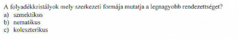
teszt
-
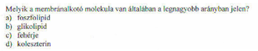
- megoldás ► A
teszt
-
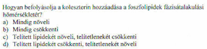
- megoldás ► D
teszt
-
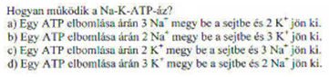
- megoldás ► C
teszt
-
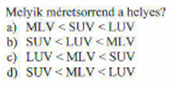
- megoldás ► B
teszt
-
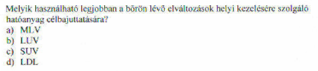
- megoldás ► A
teszt
-
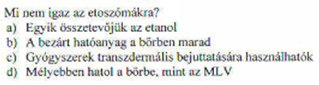
- megoldás ► B
teszt
-
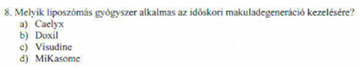
- megoldás ► C
teszt
-
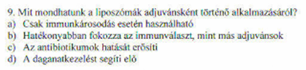
- megoldás ► B
teszt
-
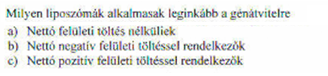
- megoldás ► C
teszt
-
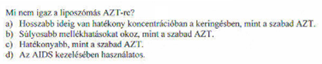
- megoldás ► B
teszt
-
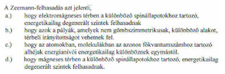
- megoldás ► D
teszt
-
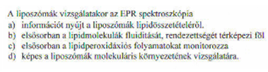
- megoldás ► B
teszt
-
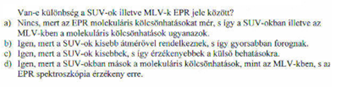
- megoldás ► D
teszt
-
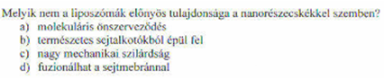
- megoldás ► C
teszt
-
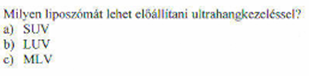
- megoldás ► A
teszt
-
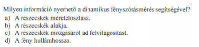
- megoldás ► C
teszt
-
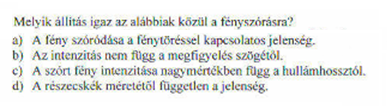
- megoldás ► C
teszt
-
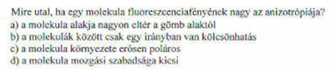
- megoldás ► ?
teszt
-
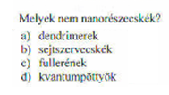
- megoldás ► B
teszt
-
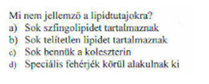
- megoldás ► B
teszt
-
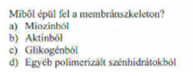
- megoldás ► B
teszt
-
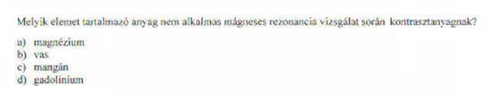
- megoldás ► A
teszt
-
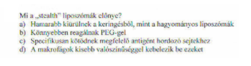
- megoldás ► D
teszt
-
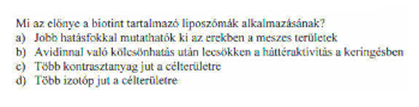
- megoldás ► B
teszt
-
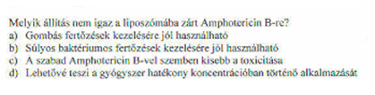
- megoldás ► B
teszt
-
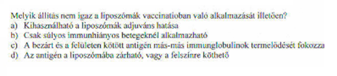
- megoldás ► B
teszt
-
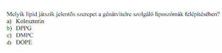
- megoldás ► D
teszt
-
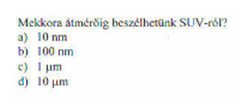
- megoldás ► B
teszt
-
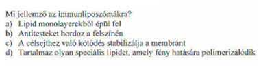
- megoldás ► B
Kifejtős
koleszterin funkció?
- Destabilizál (Tm csökken) telített lipidek jelenlétében ➜ a membrán fluiditása és permeabilitása növekszik
- Stabilizál (Tm növekszik) telítetlen lipidek jelenlétében ➜ a membrán fluiditása és permeabilitása csökken
Tm = fázisátalakulási hőmérséklet
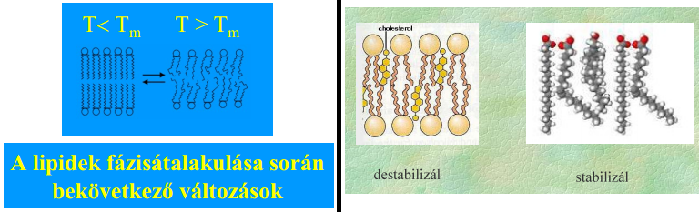
membránalkotó molekulák felsorolása?
- lipidek 40-60%
- foszfolipidek
- koleszterin
- egyéb lipidek ➜ szfingolipidek, glikolipidek
- fehérjék 30-50%
foszfolipidek csoportosítása?
- semleges, negatív, pozitív töltésű
- telített vagy telítetlen
membránfehérjék csoportosítása?
- integráns ➜ van apoláris része amivel mélyen kötődik a lipidrétegbe
- transzmembrán ➜ integráns, mely teljesen átér
- perifériás ➜ csak felszínesen kötődik
"membránátjutás" lehetőségeinek felsorolása?
- egyszerű_diffúzió ➜ nincs
- facilitált_diffúzió ➜ csatornafehérje vagy transzporter-fehérje
- aktív_transzport ➜ transzporter-fehérje (=)
- egyszerű_diffúzió ➜ nagyobbtól kisebb koncentráció fele
- facilitált_diffúzió ➜ nagyobbtól kisebb koncentráció fele ✽
- aktív_transzport ➜ kisebbtől nagyobb koncentrációjú fele
- egyszerű_diffúzió ➜ koncentrációkiegyenlítődés
- facilitált_diffúzió ➜ koncentrációkiegyenlítődés +/- töltéskiegyenlítődés
- aktív_transzport ➜ ATP közvetlenül vagy közvetve
- egyszerűnél ionok nem juthatnak át, facilitáltnál igen
- az, hogy elméletben a töltéskiegyenlítődés mind segítheti, mind gátolhatja a transzportot
- segítheti pl ➜ van 10000db A+ molekula kinnt, és 1db A+ bennt ➜ befele megy az A+ szállítása hisz töltéskül. és koncentrációkül. is azt diktálja
- gátolhatja pl ➜ van 10000db A+ és 10000db B- kinnt, és 1db A+ bennt ➜ csak A+ transzportja engedélyezett ➜ nyilván befele megy az A szállítása hisz koncentrációkül nagyon ezt diktálja, de itt a töltéskül. ellene szól
- problémám, hogy nincs konkrét példám ezekre, hogy milyen lehet (illetve az se világos, hogy csatorna és transzporter esetében is vannak-e ilyenek)

| egyszerű_diffúzió | transzport | |
|---|---|---|
| passzív = facilitált_diffúzió | aktív | |
transzportfehérje? !! | ||
nagyobb / kisebb koncentrációjú térbe megy a szállítandó? | ||
energiáját mi fedezi? | ||
töltéskiegyenlítődés egyszerű/facilitált diffúziónál miért van/nincs?
(töltéskiegyenlítődés facilitáltnál mi a gondom?)
aktív-transzport csoportosítása "molekulaszállítás-alapján"?
- uniport ➜ 1féle
- kotranszport ➜ 2féle
- szimport ➜ 1irányba
- antiport ➜ ellentétes irányba
Mesterséges membránok ➜ funkció?
- A biológiai membránok modellezése
- A membrán „csomagolóanyagként” és szállítóeszközként történő felhasználása
Mesterséges membránok ➜ típusai?
- Lipid kettősrétegek (BLM)
- liposzómák
transzportfehérjék típusai?
| transzportfehérjék !!!!!!!!! | |
|---|---|
| csatorna | karrier (hordozó,transzporter) |
kötés az átjutó anyag és transzportfehérje között...nem jön létre ||||||||||||| létrejön | |
átjuttatás módja?fehérje belsejében lévő csatornán diffúzióval átjut az anyag ||||||||||||| membrán másik oldalára "átpumpálja és elengedi" | |
transzportfehérje szerkezetével mi történik?nem változik meg ||||||||||||| megváltozik a folyamat során | |
folyamat sebessége?gyorsabb ||||||||||||| lassabb | |
milyen transzportra képes(passzív/aktív)?csak passzív ||||||||||||| passzív / aktív | |
liposzómák típusai méret alapján?
- Unilamelláris liposzóma ➜ 1 lipid kettősétegből áll
- small (SUV) ➜ d < 100nm
- large (LUV) ➜ d > 100nm
- multilamelláris liposzóma (MLV) ➜ 1-bél több lipid kettősrétegből áll
liposzómák típusai "működésük" alapján?
- konvencionális (C) liposzómákat ➜ felszínén semmilyen speciális molekula nem található ➜ Ezeket az immunrendszer idegenként ismeri fel és nagy részüket a makrofágok kebelezik be
- stabilizált, „lopakodó (stealth)” – S ➜ felszínén polimerláncok (pl. polietilén-glikol – PEG) találhatók ➜ ezek elrejtik a liposzómát az immunsejtek elől ➜ hosszú keringési életidejűek ➜ Az ilyen típusú liposzómákat sokkal kisebb mértékben kebelezik be a makrofágok, mint a konvencionálisakat, és így sokkal nagyobb eséllyel jutnak el a szervezet más területeire
- immunliposzómák ➜ antitestek vannak a felszínén ➜ célsejten van az antitest-receptor, így ahhoz fog kötődni, aminek hatására destabilizálódik a membránja és így kiürül a tartalma ➜ daganatterápiára megfelelő
- mágneses liposzómák ➜ paramágneses anyag (vas-oxid) van bennük ➜ külső mágneses tér segítségével irányíthatók a szervezeten belül
- pH szenzitív liposzómák
- savas környezetben (pl. gyulladásos területen) könnyen fúzionál, tartalmát endocitózissal űríti a célsejtbe
- lipidkomponense a DOPE
- termoszenzitív liposzómák
- Tm kicsivel a testhőmérséklet fölötti ➜ lokális hipertermia (= rákellenes hőkezelés) esetén űríti ki a tartalmát
- LUV
- lipidkomponense a DPPC/DSPC keverék
- fotoszenzitív liposzómák
- fotoszenzitív lipidet tartalmaz ➜ ez fény hatására polimerizálódik ➜ membrán permeabilitása és a bezárt hatóanyag kiáramlása megnövekszik
ioncsatornák típusai?
-
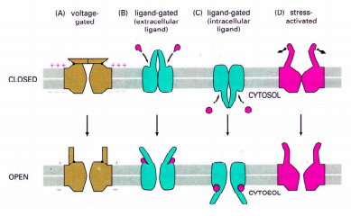
- feszültség-függők (A) ➜ feszültség-változásra nyílnak, ilyenek pl. Na+- és K+- és Ca2+-csatornák
- ligand-függők (B,C) ➜ pl. neurotranszmitter (pl. acetilkolin, glicin, γ-aminovajsav, IP3) hatására nyílnak
- stressz-aktivált (D) ➜ mechanikai hatásra nyílnak ki
zárt állapotban vannak alapvetően ➜ szignál hatására nyílnak, a szignál típusa alapján lehetnek
foszfolipid feji része mit befolyásol hogyan?
| ha nettó töltése semleges | kölcsönhatásra kevésbé hajlandó | stabilabb |
|---|---|---|
| ha nettó töltése negatív | kölcsönhatásra inkább hajlandó | instabilabb |
foszfolipidek mozgásai a membránban? gyakoriságuk?
- flexio > laterális diffúzió >>> flip-flop 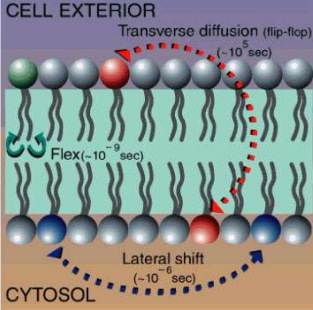
liposzómába zárt hatóanyagok hol találhatók?
- hidrofil hatóanyag a belsejében
- hidrofób hatóanyag a lipid kettősrétegben
foszfolipidet alkotó zsírsavláncok hossza Tm-et hogy befolyásolja?
- hossza arányos a Tm-el ➜ minél hosszabb, annál nagyobb
(Minél kevesebb szénatomot, minél több kettőskötést tartalmaznak, olvadáspontjuk annál alacsonyabb)
foszfolipidet alkotó zsírsavláncban lévő kettős kötések száma hogy befolyásolja a Tm-et
- kettős kötések száma FORDÍTOTTAN arányos a Tm-el ➜ minél több, annál kisebb
(Minél kevesebb szénatomot, minél több kettőskötést tartalmaznak, olvadáspontjuk annál alacsonyabb)
folyadékkristályok
típusai rendezettségük alapján?
-
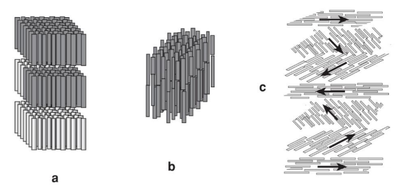
- olyan mint a nematikus, de a síkok olyan szöget zárnak be, hogy a molekulatengelyek csavarvonalat alkotnak
- koleszterinnél vették először észre, innen a neve
- transzlációs ➜ molekulák tömegközéppontja egy síkban, köztük azonos távolság (és több ilyen síkből tevődik össze)
- orientációs ➜ molekulatengelyek egy irányba mutatnak
a szmektikus ➜ traszlációs & orientációs rendezettség
b nematikus ➜ csak orientációs rendezettség
c koleszterikus
rendezettség 2 típusának (transzlációs & orientációs) lényege?
típusai (rendezettségük befolyásulása alapján)?
- termotrop ➜ rendezettségük elsősorban a hőmérséklettől függ
- liotrop ➜ rendezettségük elsősorban a komponensek koncentrációjának arányától függ
- liotrop
- oka, hogy amfifil a foszfolipid, és az amfilil molekulák víz jelenlétében liotrop struktúrát alkotnak ➜amfifilnek azt a molekulát nevezzük, amelyiknek egymástól jól elkülönülő poláris és apoláris része van
"foszfolipid-struktúrákra"(sejtmembrán,liposzóma) mely jellemző?
termotróp folyadékkristályok felhasználására 2 pl?
- kontakttermográfia
- LCD-kijelzők
liposzómák előállítása
bezárási hatásfok?
- megadja, hogy a hatóanyag mekkora hányada zárható liposzómákba
mesterséges lipidek számától hogyan függenek az alábbiak ➜ bezárási hatásfok, sejtekbe való felvétel hatásfoka? élettartama?
- nő ➜ hidrofil molekulák bezárási hatásfoka & sejtekbe való felvétel
- csökken ➜ élettartam
- mesterséges lipidek nettó töltése? ► pozitív
minél több van, annál inkább...
két fő összetevő felsorolása?
- lipid(film)
- vizes fázis
vizes fázis mikor destabilizál?
- ha a pH-ja kisebb, mint 6,5 vagy nagyobb mint 8,5
BLM ➜ mi? funkció?
- Bilayer Lipid Membrane ➜ kétrétegű sík membrán
- transzport vizsgálatára alkalmazzák (pl. ioncsatornák működésének vizsgálata)
MLV bezárási hatásfoka?
- kicsi
előállításuk ➜ SUV, LUV, MLV?
- MLV ➜ ezé a legegyszerűbb
- SUV
- MLV-ből ultrahangozzással
- MLV-ből French Press alkalmazással
- gyors injektálással
- LUV
- MLV-ből filtrációval
- SUV fúzióval (ugyanis a SUV állás során fúzióra hajlamos)
- lassú injektálással
fényszórás mérés
szórt fény mi?
- Fényszórásról beszélünk, ha egy részecske a rá eső fény hatására időbeli késleltetés nélkül maga is fényt bocsát ki (szekunder sugárzás), a beeső fénytől (primer sugárzás) eltérő irányokban
szórt fény intenzitása miktől függ?
- részecskeszám ➜ arányos vele
- részecskék mérete & hullámhossz
- ha részecskeméret kisebb, mint a hullámhossz ➜ akkor ún. Mie-szórás van
- ha részecskeméret nagyobb, mint a hullámhossz ➜ akkor ún. Raleigh-szórás van
- detektor távolsága
- megfigyelés szöge 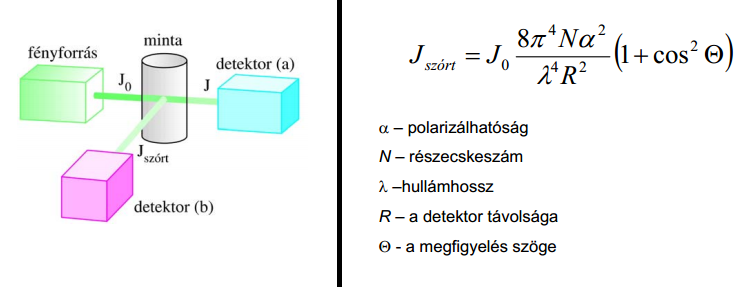